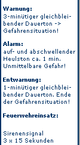

Zivilschutzprobealarm am 4. Oktober 2008
Am Samstag, den 4. Oktober 2008, wird wieder ein bundesweiter Zivilschutz-Probealarm durchgeführt.
Zwischen 12.00 und 13.00 Uhr werden nach dem Signal "Sirenenprobe" die drei Zivilschutzsignale "Warnung", "Alarm" und "Entwarnung" in ganz Österreich ausgestrahlt.
Der Probealarm dient einerseits zur Überprüfung der technischen Einrichtungen des Warn- und Alarmsystems, andererseits soll die Bevölkerung mit diesen Signalen vertraut gemacht werden.

xxxxxxxxxxxxxxxxxxxxxxxxxxxxxxxxxxxxxxxxxxxxxxxxxxxxxxxxxxxxxxxxxxx
Viribus Unitis 2008
Am 17. und 18. September 2008 fand in Neulengbach (Bez. St. Pölten) die Übung "Viribus Unitis 2008" statt.
Die 120 teilnehmenden Führungskräfte von Bundesheer, Feuerwehr und Rettungsorganisationen übten mittels eines Gefechtssimulators des Bundesheeres verschiedene Katastrophenszenarien. Übungsziel war die Verbesserung der Kommandostrukturen im Ernstfall.
Seitens des Abschnittes Langenlois nahmen BSB Huber (FF Langenlois), HBI Thaller (FF Hadersdorf) und BM Hoffmann (FF Lengenfeld) an dieser Übung teil.

Artikel der Zeitung "heute"
xxxxxxxxxxxxxxxxxxxxxxxxxxxxxxxxxxxxxxxxxxxxxxxxxxxxxxxxxxxxxxxxxxx
Bezirksfeuerwehrtag am 29. Februar
Beim diesjährigen Bezirksfeuerwehrtag, der am 29.02.2008 in der Volksschule Brunn im Felde abgehalten wurde, waren rund 400 Funktionäre und Chargen der 127 Feuerwehren des Bezirks Krems anwesend.
Anlässlich dieser Veranstaltung wurden einige Kameraden vom Bezirksfeuerwehrkommandanten LFR Walter HARAUER mit Ehrungen, Ernennungen und Auszeichnungen bedacht.
Von der Freiwilligen Feuerwehr Lengenfeld erhielt BM Markus HOFFMANN das Ausbilderverdienstzeichen in Bronze.

xxxxxxxxxxxxxxxxxxxxxxxxxxxxxxxxxxxxxxxxxxxxxxxxxxxxxxxxxxxxxxxxxxx
Am 02.02.2008 veranstaltete die Volksschule Lengenfeld den alle zwei Jahre stattfindenden Faschingsumzug.
Die Feuerwehr Lengenfeld nahm mit 2 Gruppen am Umzug teil.
 |
 |
 |
 |
 |
xxxxxxxxxxxxxxxxxxxxxxxxxxxxxxxxxxxxxxxxxxxxxxxxxxxxxxxxxxxxxxxxxxx
Am 6. Jänner 2008 fand die Jahreshauptversammlung in der Golfbergstub'n statt.
Unter den Ehrengästen konnte Kommandant Franz Ettenauer Herrn Bgm. Otmar Gschwantner, Abschnittsfeuerwehrkomandant Gerhard Eisenbock
sowie Unterabschnittskommandant Gerhard Penz begrüßen. BR Eisenbock lobte die FF Lengenfeld für ihre Leistungen im Jahr 2007 und wünschte allen ein gesundes und einsatzarmes Jahr 2008.
Christian Eilenberger wird 1. Kassaprüfer, Stefan Penz wurde zum 2. Kassaprüfer ernannt.
Ernst Anissin gibt sein Amt aus persönlichen und gesundheitlichen Gründen ab. Daniel Tremmel wird neuer EDV-Sachbearbeiter.
-
Beförderungen:
- zum Feuerwehrmann: Braun Benjamin, Busch Sabine und Weixelbaum Lukas
- zum Oberfeuerwehrmann: Kittenberger Helmut
- zum Hauptfeuerwehrmann: Penz-Resch Norbert
- zum Oberlöschmeister: Winkler Franz
 |
 |
 |
Am 21. Dezember 2007 fand im Festsaal in Lengenfeld unsere Weihnachtsfeier statt.
Der Bürgermeister, die Patinnen und alle Feuerwehrmitglieder wurden recht herzlich dazu eingeladen.
Im Laufe des Abends wurde der Lagerfilm nochmals gezeigt und jedes Mitglied der Feuerwehrjugend bekam ein kleines Weihnachtsgeschenk.
 |
 |
 |
xxxxxxxxxxxxxxxxxxxxxxxxxxxxxxxxxxxxxxxxxxxxxxxxxxxxxxxxxxxxxxxxxxx
Zivilschutzprobealarm am 6. Oktober 2007
Am Samstag, den 6. Oktober 2007, wurde wieder ein bundesweiter Zivilschutz-Probealarm durchgeführt.
Zwischen 12.00 und 13.00 Uhr wurden nach dem Signal "Sirenenprobe" die drei Zivilschutzsignale "Warnung", "Alarm" und "Entwarnung" in ganz Österreich ausgestrahlt.
Der Probealarm dient einerseits zur Überprüfung der technischen Einrichtungen des Warn- und Alarmsystems, andererseits soll die Bevölkerung mit diesen Signalen vertraut gemacht werden.
xxxxxxxxxxxxxxxxxxxxxxxxxxxxxxxxxxxxxxxxxxxxxxxxxxxxxxxxxxxxxxxxxxx
Am 15. September 2007 schlossen unsere Kameraden Ulrich Busch und Sabine Turek in der Pfarrkirche in Schwallenbach den Bund der Ehe!
Die Freiwillige Feuerwehr Lengenfeld gratuliert ihnen herzlichst zu ihrer Hochzeit.
 |
 |
 |
xxxxxxxxxxxxxxxxxxxxxxxxxxxxxxxxxxxxxxxxxxxxxxxxxxxxxxxxxxxxxxxxxxx
Abschnittsfeuerwehrtag in Schiltern
Der diesjährige Abschnittsfeuerwehrtag des Abschnittes Langenlois fand am 08.06.2007 in Schiltern statt.
Im Zuge dieser Veranstaltung wurden von Landesfeuerwehrrat Walter HARAUER, der als Vertrter des Landesfeuerwehrverbandes anwesend war, Verdienstzeichen "zweiter und dritter Klasse" an Mitglieder der Freiwilligen Feuerwehren verliehen.